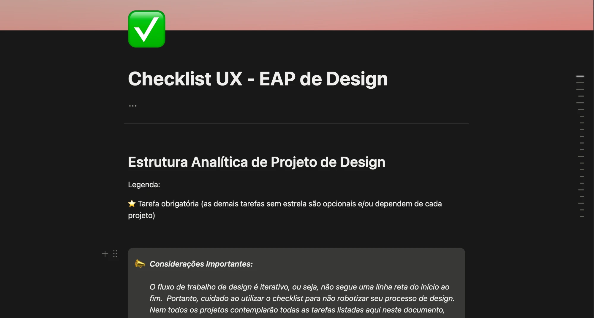

Case 01 · Quero Delivery
Harness Design
Redesenhando o workflow de UX com inteligência artificial
Como projetei uma arquitetura de agentes e skills para otimizar processos, reduzir gargalos operacionais e transformar a maneira como um time de UX trabalha.
- Empresa
- Quero Delivery
- Papel
- Product Design
- Ano
- 2026
- Resultado
- −40% de tempo em atividades-chave
01 · O desafio
Identificar onde a IA poderia gerar valor
Antes de pensar em soluções com IA, o primeiro passo foi entender profundamente nosso processo de trabalho.
Em parceria com o time de UX, conduzi uma análise do workflow para identificar as atividades que mais demandavam tempo, os principais gargalos e as oportunidades de otimização.
O objetivo não era simplesmente automatizar tarefas, mas tornar o processo mais eficiente sem comprometer a qualidade das entregas e a consistência metodológica do time.
Para isso, mapeamos todo o fluxo de trabalho no FigJam e centralizamos no Notion nossa documentação analítica, reunindo processos, diretrizes, critérios e referências utilizados durante a execução dos projetos.
O resultado foi uma visão estruturada de todo o nosso processo, permitindo identificar onde a IA poderia atuar de forma estratégica.



02 · Estratégia
Projetando a arquitetura do Harness
Com os gargalos identificados, meu próximo desafio foi transformar esse mapeamento em uma arquitetura capaz de integrar inteligência artificial ao nosso workflow.
Iniciei a estruturação do Harness Design com o apoio do Claude, utilizando nossa documentação como base para projetar um sistema contextualizado com a realidade do time.
A estratégia foi organizar nosso conhecimento para que a LLM não apenas executasse comandos, mas compreendesse nosso processo, respeitasse nossas diretrizes e apoiasse os designers em atividades específicas. Para isso, trabalhei em três frentes:
Centralização do conhecimento
Unifiquei nossa documentação em um manual de processos, estruturando as informações necessárias para orientar a execução das atividades.
Contextualização da LLM
Disponibilizei a documentação como fonte de conhecimento, para que a LLM compreendesse nosso workflow, nossas regras e os padrões de construção dos projetos.
Definição da arquitetura
A partir do mapeamento do processo, identifiquei as oportunidades de aplicação de IA e defini os agentes e skills necessários para apoiar cada etapa.
Com essa arquitetura inicial definida, estabeleci um MVP para testar a solução em situações reais de trabalho.
03 · MVP
Transformando oportunidades em soluções
Para validar a arquitetura, priorizei as atividades com maior potencial de otimização, especialmente nas etapas de Discovery e Construção. A partir disso, desenvolvi junto com o time e testei quatro skills.
Cada skill foi estruturada considerando o contexto de aplicação, as referências necessárias e as regras específicas de execução.
Mais do que validar a capacidade da IA de gerar respostas, o objetivo era verificar se ela conseguiria executar atividades seguindo nosso método de trabalho.
- 01BenchmarkingApoiar pesquisas e análises de referências de mercado.
- 02HandoffEstruturar e documentar entregas para desenvolvimento.Maior impacto
- 03Matriz CSDOrganizar certezas, suposições e dúvidas do projeto.
- 04Análise HeurísticaApoiar avaliações de interfaces com base em princípios de usabilidade.
04 · Deep dive
Projetando uma Skill de Handoff
O Handoff era uma das atividades que mais demandavam tempo do time. Por envolver organização de informações, documentação, aplicação de componentes e validações, representava uma oportunidade importante de otimização.
Minha abordagem foi transformar todo o conhecimento operacional dessa atividade em uma estrutura que a LLM pudesse interpretar e executar.
Estruturando a fonte de verdade
Comecei documentando todo o processo de construção do Handoff diretamente no Figma: os componentes utilizados, as instruções de aplicação, as regras de construção e um exemplo real de entrega de um projeto.
Esse material passou a funcionar como a fonte de verdade da skill. Para complementar o contexto, também disponibilizei a documentação de kickoff dos projetos, para que a IA acessasse informações específicas antes de iniciar a montagem.
Projetando a arquitetura de execução
Em vez de pedir que a IA construísse todo o Handoff de uma única vez, dividi o processo em três fases independentes e complementares. Isso criou pontos de validação humana, aumentou a previsibilidade das entregas e estabeleceu um mecanismo de evolução contínua.
Revisão
Garantir a consistência e a qualidade antes da montagem.
- Analisa o checklist de construção e os critérios definidos na documentação.
- Identifica inconsistências, possíveis ajustes e pontos de atenção.
- Gera um relatório detalhado para validação do designer.
- As correções são feitas pelo próprio designer ou pela IA, conforme a orientação recebida.
Montagem
Transformar as informações do projeto em uma entrega estruturada.
- Consulta a documentação de kickoff para coletar as informações necessárias.
- Organiza os dados encontrados e apresenta um resumo para confirmação.
- Aguarda a aprovação e a autorização do designer.
- Monta o Handoff no local indicado, seguindo os componentes, padrões e instruções documentados.
Aprendizados
Tornar a solução evolutiva a partir das interações com o time.
- Identifica os ajustes solicitados pelo designer.
- Organiza os padrões e aprendizados identificados durante as interações.
- Retorna um registro do que foi aprendido, para o aprimoramento contínuo da skill.
Essa estrutura estabeleceu um fluxo no qual a IA atua na execução, mas o designer continua participando das decisões e validações importantes.
De horas
para minutos.
O que antes demandava horas de trabalho passou a ser resolvido em minutos.
Além da redução no tempo de execução, conseguimos estabelecer um processo mais padronizado, diminuir o esforço operacional e liberar tempo do designer para atividades que exigem maior análise, criatividade e tomada de decisão.
05 · Impacto
Eficiência operacional e evolução contínua
de redução no tempo dedicado a algumas atividades de Discovery e Construção.Principal resultado mensurado na primeira versão, contribuindo diretamente para acelerar as entregas e otimizar o workflow do time.
O que a primeira versão entregou
- Arquitetura inicial do Harness estruturada.
- Agentes e skills do workflow mapeados.
- Documentação centralizada como fonte de conhecimento.
- Quatro skills desenvolvidas e validadas.
- Fluxo estruturado de execução e validação para o Handoff.
Próximos passos
Um ecossistema que evolui com o time
O Harness Design foi concebido como uma arquitetura evolutiva, não como uma solução estática.
A próxima etapa é expandir o ecossistema com novos agentes e skills, identificados a partir das necessidades que surgirem durante a execução dos projetos. A ideia é que a arquitetura cresça junto com o time, incorporando novos conhecimentos, processos e oportunidades de otimização.
Mais do que automatizar tarefas, projetei uma nova camada de inteligência para o workflow: um sistema que compreende nossos processos, potencializa os designers e evolui com a operação.
Vamos conversar
sobre o seu produto.
Aberto a conversas sobre produto, design e novas oportunidades.